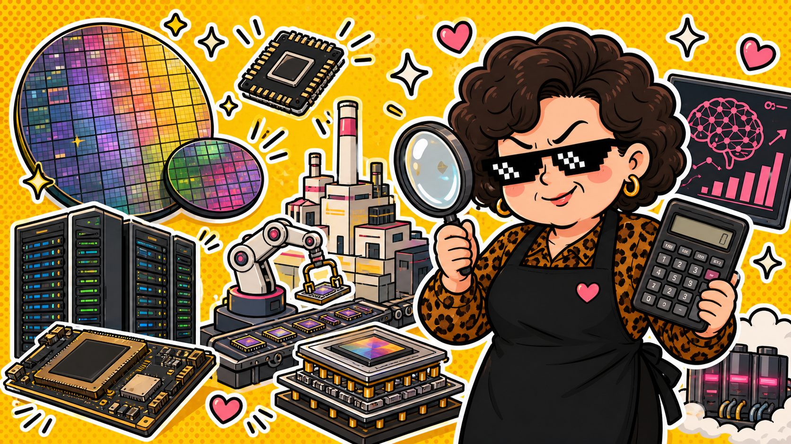

2330 台積電 · AI 產能故事
晶片很熱，先看產能
台積電最近的主線不是只有股價跳上跳下，而是 AI 晶片後面的「先進製程 + 先進封裝」到底跟不跟得上。
上圖為 AI 生成情境圖，不是新聞照片，也不是投資建議。
資料整理：2026/05/25
阿姨白話：AI 晶片像辦桌，客人一直來，重點不只菜好不好吃，還要看廚房、瓦斯爐和端菜人手夠不夠。
近期市場焦點放在 CoWoS 先進封裝擴產。TechNews 報導指出，台積電因應 AI GPU 需求，竹南 3D Fabric 廠的 CoWoS 產能規畫仍在擴大。這種新聞代表市場在看「AI 需求是不是真的能轉成出貨」，不是只看一句 AI 很紅就衝去排隊。
台積電官方在 2026 北美技術論壇也把 A14、A16、N2P、N2X 等先進技術端出來。翻成阿姨話就是：它不只賣現在的便當，也在準備下一季菜單。問題是，菜單越高級，建廠、良率、客戶下單和景氣循環也越不能裝沒看到。
阿姨看點
- 看 CoWoS 與先進封裝產能，不要只看「AI」兩個字就心跳加速。
- 看大客戶需求是否延續，因為熱門訂單也可能有庫存與景氣循環。
- 股價如果已經反映很多期待，追高前要知道自己是在買公司，還是在買興奮。
阿姨警示
不是買賣建議
這篇只是把近期公開資訊翻成白話。台積電是大型權值股，會受匯率、客戶資本支出、地緣政治、估值與整體市場影響。要買要賣，請依照自己的資金、風險承受度和研究判斷。